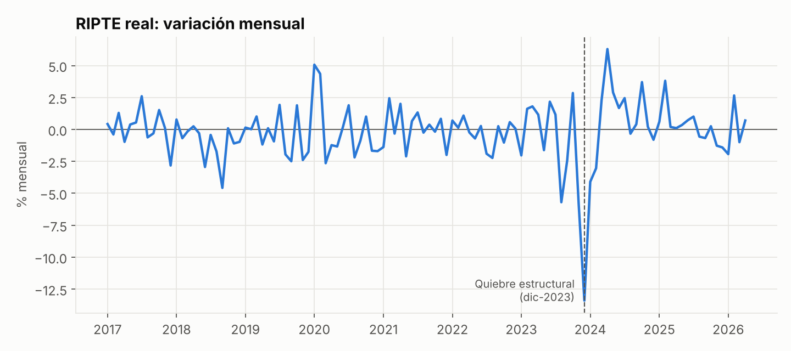
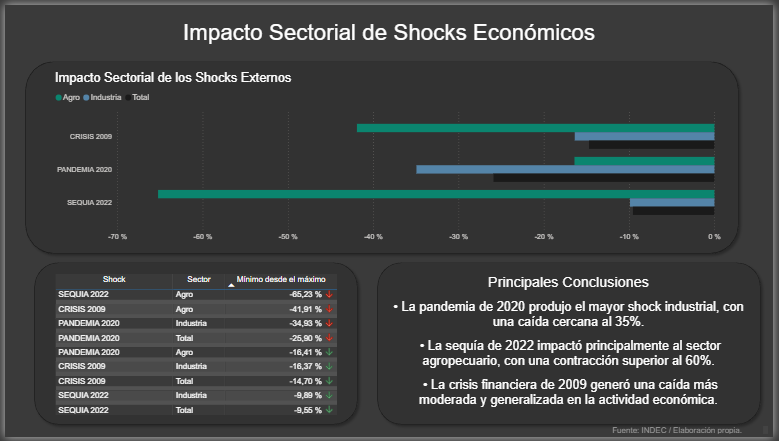

Why economics
Like most Argentines, I grew up with the news on. Inflation, the dollar, one crisis after another. At some point the headlines weren't enough, and I wanted to know why this keeps happening.
That curiosity is what got me into economics. What I found at university wasn't a recipe for fixing Argentina. It was something more useful: a way to tell which questions are the right ones, and the tools to test them against real data.
The answers are hard, because every country's problems are its own. But asking the right question is where it starts. That's what my projects try to do.
Questions
The questions I keep coming back to

What happened to real wages after the December 2023 devaluation?

Which sectors take the hardest hit in a crisis, and how long do they take to recover?
Why does Argentina keep coming back to high inflation?
How much of a devaluation ends up in prices, and how fast?
Why does the economy grow in stop-and-go cycles?
I've also done business analytics with SQL and Power BI. Every project, with code and data, is in my portfolio.
Where I'm heading
From questions to a career in macro research
- Now
Studying economics at UBA and building data projects on the Argentine economy.
- 2027
Graduating with a degree in economics.
- Next
A first role in macroeconomic research, at an economic consultancy or a bank.
- Later
A master's, in Argentina or abroad, and someday leading economic research.
What I enjoy most is the econometric side of macro: building a model, testing it against the data, and being honest about what it can and can't tell us.
Off the clock
Bass lines, dystopias and the gym
On my shelf
Dune is my favorite novel. I love the classic dystopias, and lately I've been getting into horror and Argentine authors.
I play bass
My soundtrack is Argentine rock from the 70s, 80s and 90s, plus rock from abroad from the 2000s on.
Gym and long walks
Lifting weights clears my head. So do long walks, with or without music.
Let's talk about the economy.
If you work in macro research, banking or data and want to chat, I'd love to hear from you.